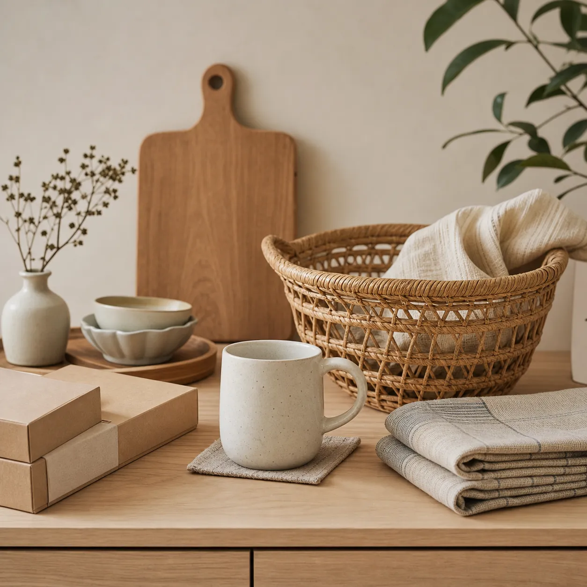

HOME & LIVING
居家生活用品
HOW WE PICK
選材質耐用的，不選好看但難整理的。
居家用品最怕買了才發現不好收、不好洗。我們挑選標準很實際：材質耐用、顏色耐髒、體積不會佔滿櫃子。清潔劑類則盡量選中性、不嗆鼻的配方，先把家裡最容易卡住的那一段整理好。
FEW, BUT CAREFUL
幾件我們常推薦的
只列名稱與一句話說明，不標價格；完整品項在線上商店。
品類頁只做形象介紹；線上選品頁提供瀏覽與商品故事，不做購物車或結帳。

HOME & LIVING
HOW WE PICK
居家用品最怕買了才發現不好收、不好洗。我們挑選標準很實際：材質耐用、顏色耐髒、體積不會佔滿櫃子。清潔劑類則盡量選中性、不嗆鼻的配方，先把家裡最容易卡住的那一段整理好。
FEW, BUT CAREFUL
只列名稱與一句話說明，不標價格；完整品項在線上商店。